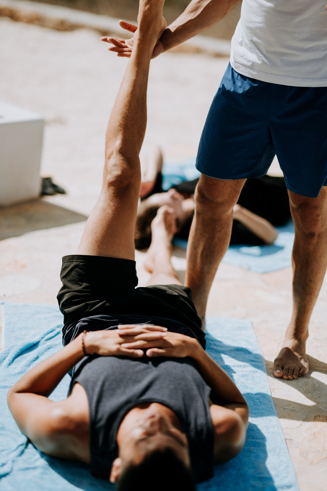
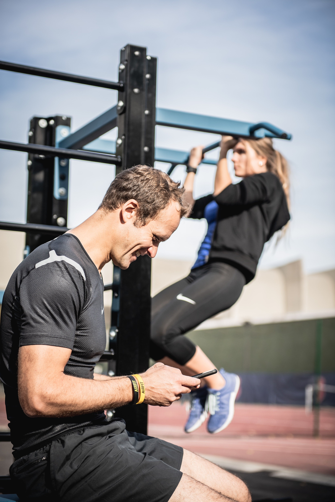

My focus is on strength and conditioning, flexibility and mobility, as well as body recomposition with a heavy emphasis on mindset and the right motivation!
1:1 in Person

1:1 in PERSON
Individualised Programs
Full App Access with videos of exercises
Macro Nutrient Guidance
Measurements Monlthy
Daily Habits
Goal Setting
Ongoing Support via APP
About Me
Professionel Experience
I started my fitness journey later in life. I got to the point in my life where I was so rundown from daily life challenges that it was beginning to take its toll on my body. My body didn’t bounce back the way it did in my 20’s and early 30’s. I was putting my sons needs before mine and not giving myself time for self-love/self-care. Have you ever looked in the mirror and thought: “When did I get that gut?” or “What is that hair?”
I was barely eating and sleeping and seriously depressed. My doctor put me on thyroid medication as my bloods were so out of whack it was life threatening. I was the ultimate skinny fat!
I got to the point where I realised that I needed to make some serious lifestyle changes because I honestly didn’t like the person I had become and knew I had to turn it around before I hit 40.
I dragged myself out of bed every day to train, going to the gym was so intimidating for me I just stuck to classes and cardio at first. I then realised if I wanted to make some serious changes in my body composition I would have to learn how to train with weights. It wasn’t easy and trust me I’m not a natural athlete, but I had determination.
After training for a while, I began to enjoy training and no longer found the gym intimidating. I still wanted to have that quick fix perfect body but I had to learn to trust the process. These days I mainly train for my mental health. Obviously gaining a good body is a huge part of it and an added bonus but I honestly train to stay sane.
This is a big deal for me to write something so brutally honest in public but I became a personal trainer as I obviously fell in love with training but I also wanted to help other people who like me, decided they needed to make a change.
1:1 Online

1:1 in PERSON
Individualised Programs
Full App Access
Macro Nutrient Guidance
Weekly Check-in via ZOOM
Daily Habits
Goal Setting
Ongoing Support via APP
Contact
Royal Randwick Shopping Centre, Fitness First, 73 Belmore Rd, NSW 2031
Bondi Junction, Fitness First, 110 Spring St, NSW 2022
Tel: 0424 827 791
Let us get in touch!